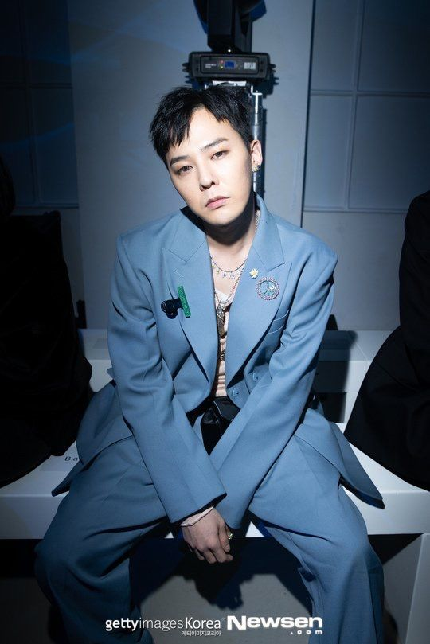
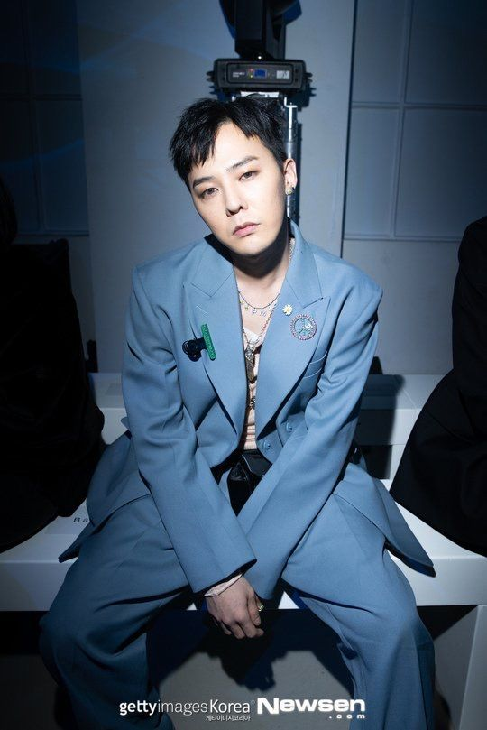

Kwon Ji Yong
 

King of the Korean Pop Industry
Nothing ever lasts forever
In the end, you changed
There is no reason, no sincerity
Take away such a thing as love
Tonight, I’ll be crooked
Leave me alone
I was alone anyway
I have no one, everything is meaningless
Take away the sugar-coated comfort
Tonight, I’ll be crooked
I scream and get dizzy
I vent out of boredom to other couples
I start fights for no reason like a town gangster
Sometimes, I purposely shake my leg, crookedly
The main characters of the movie called this world is you and me
A lonely island, lost and wandering
The empty streets are filled with those who are alone
Unlike my heart, the weather is so damn nice
I used to believe in you alone and I was happy
But like a joke, I am left alone
You used to promise me with your pinky finger
But in the end
Nothing ever lasts forever
In the end, you changed
There is no reason, no sincerity
Take away such a thing as love
Tonight, I’ll be crooked
Leave me alone
I was alone anyway
I have no one, everything is meaningless
Take away the sugar-coated comfort
Tonight, I’ll be crooked